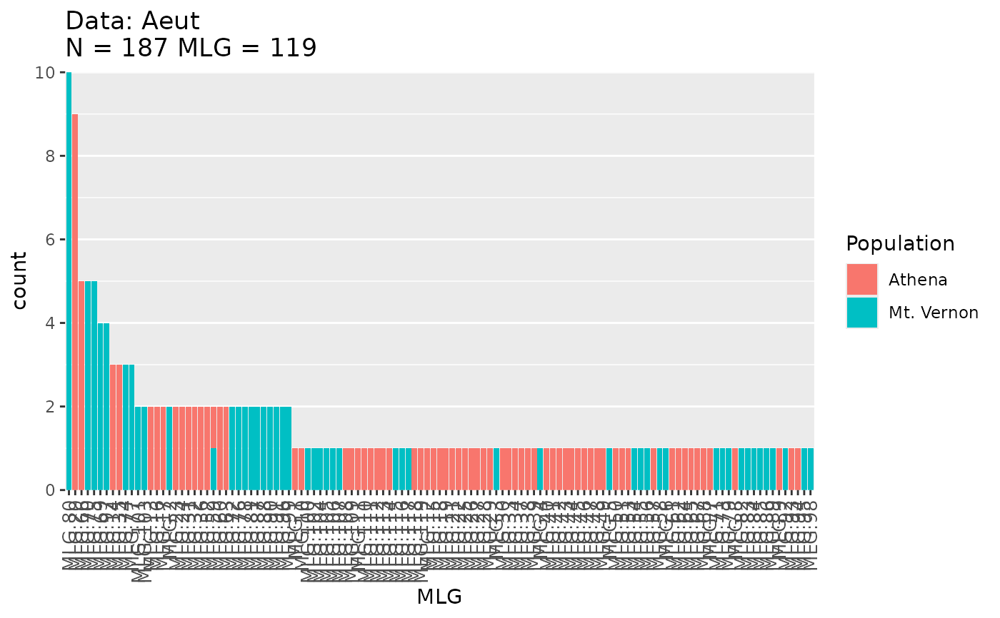

Create counts, vectors, and matrices of multilocus genotypes.
Usage
mlg(gid, quiet = FALSE)
mlg.table(
gid,
strata = NULL,
sublist = "ALL",
exclude = NULL,
blacklist = NULL,
mlgsub = NULL,
bar = TRUE,
plot = TRUE,
total = FALSE,
color = FALSE,
background = FALSE,
quiet = FALSE
)
mlg.vector(gid, reset = FALSE)
mlg.crosspop(
gid,
strata = NULL,
sublist = "ALL",
exclude = NULL,
blacklist = NULL,
mlgsub = NULL,
indexreturn = FALSE,
df = FALSE,
quiet = FALSE
)
mlg.id(gid)Arguments
- gid
a adegenet::genind, genclone, adegenet::genlight, or snpclone object.
- quiet
Logical. If FALSE, progress of functions will be printed to the screen.- strata
a formula specifying the strata at which computation is to be performed.
- sublist
a
vectorof population names or indices that the user wishes to keep. Default to "ALL".- exclude
a
vectorof population names or indexes that the user wishes to discard. Default toNULL.- blacklist
DEPRECATED, use exclude.
- mlgsub
a
vectorof multilocus genotype indices with which to subsetmlg.tableandmlg.crosspop. NOTE: The resulting table frommlg.tablewill only contain countries with those MLGs- bar
deprecated. Same as
plot. Retained for compatibility.- plot
logicalIfTRUE, a bar graph for each population will be displayed showing the relative abundance of each MLG within the population.- total
logicalIfTRUE, a row containing the sum of all represented MLGs is appended to the matrix produced by mlg.table.- color
an option to display a single barchart for mlg.table, colored by population (note, this becomes facetted if `background = TRUE`).
- background
an option to display the the total number of MLGs across populations per facet in the background of the plot.
- reset
logical. For genclone objects, the MLGs are defined by the input data, but they do not change if more or less information is added (i.e. loci are dropped). Setting `reset = TRUE` will recalculate MLGs. Default is `FALSE`, returning the MLGs defined in the @mlg slot.
- indexreturn
logicalIfTRUE, a vector will be returned to index the columns ofmlg.table.- df
logicalIfTRUE, return a data frame containing the counts of the MLGs and what countries they are in. Useful for making graphs with ggplot2::ggplot.
Value
mlg.table
a matrix with columns indicating unique multilocus genotypes and rows indicating populations. This table can be used with the funciton diversity_stats to calculate the Shannon-Weaver index (H), Stoddart and Taylor's index (aka inverse Simpson's index; G), Simpson's index (lambda), and evenness (E5).
mlg.crosspop
default a
listwhere each element contains a named integer vector representing the number of individuals represented from each population in that MLGindexreturn = TRUEavectorof integers defining the multilocus genotypes that have individuals crossing populationsdf = TRUEA long form data frame with the columns: MLG, Population, Count. Useful for graphing with ggplot2
Details
Multilocus genotypes are the unique combination of alleles across
all loci. For details of how these are calculated see vignette("mlg", package = "poppr"). In short, for genind and genclone objects, they are
calculated by using a rank function on strings of alleles, which is
sensitive to missing data. For genlight and snpclone objects, they are
calculated with distance methods via bitwise.dist and
mlg.filter, which means that these are insensitive to missing
data. Three different types of MLGs can be defined in poppr:
original the default definition of multilocus genotypes as detailed above
contracted these are multilocus genotypes collapsed into multilocus lineages (mll) with genetic distance via mlg.filter
custom user-defined multilocus genotypes. These are useful for information such as mycelial compatibility groups
All of the functions documented here will work on any of the MLG types defined in poppr
Note
The resulting matrix of `mlg.table` can be used for analysis with the vegan package.
mlg.vector will recalculate the mlg vector for [adegenet::genind] objects and will return the contents of the mlg slot in [genclone][genclone-class] objects. This means that MLGs will be different for subsetted [adegenet::genind] objects.
Examples
# Load the data set
data(Aeut)
# Investigate the number of multilocus genotypes.
amlg <- mlg(Aeut)
#> #############################
#> # Number of Individuals: 187
#> # Number of MLG: 119
#> #############################
amlg # 119
#> [1] 119
# show the multilocus genotype vector
avec <- mlg.vector(Aeut)
avec
#> [1] 63 53 17 16 26 42 8 17 16 93 94 112 44 118 51 113 45 110
#> [19] 114 7 111 20 20 20 20 30 20 20 20 20 20 28 66 66 68 66
#> [37] 67 23 66 65 66 57 22 119 36 35 36 35 62 35 34 52 33 63
#> [55] 1 39 59 61 23 21 47 48 25 50 32 49 60 9 10 60 27 13
#> [73] 11 14 12 14 14 29 15 13 32 41 43 24 46 52 38 37 31 24
#> [91] 40 31 109 19 18 64 108 86 82 83 2 6 2 91 117 116 80 80
#> [109] 58 5 3 4 56 84 54 73 80 89 106 80 80 80 88 70 76 70
#> [127] 70 90 104 81 70 92 70 75 75 99 75 96 74 74 74 75 98 96
#> [145] 69 69 75 69 69 100 55 72 105 72 115 71 85 87 59 77 107 76
#> [163] 90 80 99 88 80 77 78 77 87 80 91 101 79 102 78 103 103 95
#> [181] 97 81 80 97 97 97 101
# Get a table
atab <- mlg.table(Aeut, color = TRUE)

atab
#> MLG.1 MLG.2 MLG.3 MLG.4 MLG.5 MLG.6 MLG.7 MLG.8 MLG.9 MLG.10 MLG.11
#> Athena 1 0 0 0 0 0 1 1 1 1 1
#> Mt. Vernon 0 2 1 1 1 1 0 0 0 0 0
#> MLG.12 MLG.13 MLG.14 MLG.15 MLG.16 MLG.17 MLG.18 MLG.19 MLG.20
#> Athena 1 2 3 1 2 2 1 1 9
#> Mt. Vernon 0 0 0 0 0 0 0 0 0
#> MLG.21 MLG.22 MLG.23 MLG.24 MLG.25 MLG.26 MLG.27 MLG.28 MLG.29
#> Athena 1 1 2 2 1 1 1 1 1
#> Mt. Vernon 0 0 0 0 0 0 0 0 0
#> MLG.30 MLG.31 MLG.32 MLG.33 MLG.34 MLG.35 MLG.36 MLG.37 MLG.38
#> Athena 1 2 2 1 1 3 2 1 1
#> Mt. Vernon 0 0 0 0 0 0 0 0 0
#> MLG.39 MLG.40 MLG.41 MLG.42 MLG.43 MLG.44 MLG.45 MLG.46 MLG.47
#> Athena 1 1 1 1 1 1 1 1 1
#> Mt. Vernon 0 0 0 0 0 0 0 0 0
#> MLG.48 MLG.49 MLG.50 MLG.51 MLG.52 MLG.53 MLG.54 MLG.55 MLG.56
#> Athena 1 1 1 1 2 1 0 0 0
#> Mt. Vernon 0 0 0 0 0 0 1 1 1
#> MLG.57 MLG.58 MLG.59 MLG.60 MLG.61 MLG.62 MLG.63 MLG.64 MLG.65
#> Athena 1 0 1 2 1 1 2 1 1
#> Mt. Vernon 0 1 1 0 0 0 0 0 0
#> MLG.66 MLG.67 MLG.68 MLG.69 MLG.70 MLG.71 MLG.72 MLG.73 MLG.74
#> Athena 5 1 1 0 0 0 0 0 0
#> Mt. Vernon 0 0 0 4 5 1 2 1 3
#> MLG.75 MLG.76 MLG.77 MLG.78 MLG.79 MLG.80 MLG.81 MLG.82 MLG.83
#> Athena 0 0 0 0 0 0 0 0 0
#> Mt. Vernon 5 2 3 2 1 10 2 1 1
#> MLG.84 MLG.85 MLG.86 MLG.87 MLG.88 MLG.89 MLG.90 MLG.91 MLG.92
#> Athena 0 0 0 0 0 0 0 0 0
#> Mt. Vernon 1 1 1 2 2 1 2 2 1
#> MLG.93 MLG.94 MLG.95 MLG.96 MLG.97 MLG.98 MLG.99 MLG.100 MLG.101
#> Athena 1 1 0 0 0 0 0 0 0
#> Mt. Vernon 0 0 1 2 4 1 2 1 2
#> MLG.102 MLG.103 MLG.104 MLG.105 MLG.106 MLG.107 MLG.108 MLG.109
#> Athena 0 0 0 0 0 0 1 1
#> Mt. Vernon 1 2 1 1 1 1 0 0
#> MLG.110 MLG.111 MLG.112 MLG.113 MLG.114 MLG.115 MLG.116 MLG.117
#> Athena 1 1 1 1 1 0 0 0
#> Mt. Vernon 0 0 0 0 0 1 1 1
#> MLG.118 MLG.119
#> Athena 1 1
#> Mt. Vernon 0 0
# See where multilocus genotypes cross populations
acrs <- mlg.crosspop(Aeut) # MLG.59: (2 inds) Athena Mt. Vernon
#> MLG.59: (2 inds) Athena Mt. Vernon
# See which individuals belong to each MLG
aid <- mlg.id(Aeut)
aid["59"] # individuals 159 and 57
#> $`59`
#> [1] "057" "159"
#>
if (FALSE) { # \dontrun{
# For the mlg.table, you can also choose to display the number of MLGs across
# populations in the background
mlg.table(Aeut, background = TRUE)
mlg.table(Aeut, background = TRUE, color = TRUE)
# A simple example. 10 individuals, 5 genotypes.
mat1 <- matrix(ncol=5, 25:1)
mat1 <- rbind(mat1, mat1)
mat <- matrix(nrow=10, ncol=5, paste(mat1,mat1,sep="/"))
mat.gid <- df2genind(mat, sep="/")
mlg(mat.gid)
mlg.vector(mat.gid)
mlg.table(mat.gid)
# Now for a more complicated example.
# Data set of 1903 samples of the H3N2 flu virus genotyped at 125 SNP loci.
data(H3N2)
mlg(H3N2, quiet = FALSE)
H.vec <- mlg.vector(H3N2)
# Changing the population vector to indicate the years of each epidemic.
pop(H3N2) <- other(H3N2)$x$country
H.tab <- mlg.table(H3N2, plot = FALSE, total = TRUE)
# Show which genotypes exist accross populations in the entire dataset.
res <- mlg.crosspop(H3N2, quiet = FALSE)
# Let's say we want to visualize the multilocus genotype distribution for the
# USA and Russia
mlg.table(H3N2, sublist = c("USA", "Russia"), bar=TRUE)
# An exercise in subsetting the output of mlg.table and mlg.vector.
# First, get the indices of each MLG duplicated across populations.
inds <- mlg.crosspop(H3N2, quiet = FALSE, indexreturn = TRUE)
# Since the columns of the table from mlg.table are equal to the number of
# MLGs, we can subset with just the columns.
H.sub <- H.tab[, inds]
# We can also do the same by using the mlgsub flag.
H.sub <- mlg.table(H3N2, mlgsub = inds)
# We can subset the original data set using the output of mlg.vector to
# analyze only the MLGs that are duplicated across populations.
new.H <- H3N2[H.vec %in% inds, ]
} # }